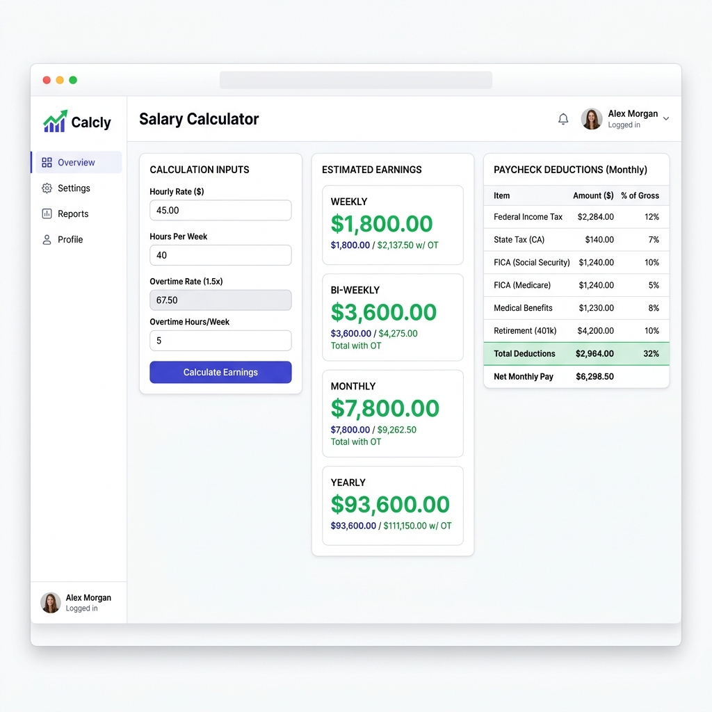

Whether you're switching from freelance to full-time, negotiating a raise, or comparing job offers, understanding how to convert between hourly, weekly, monthly, and yearly pay is essential. The math seems simple, but there are hidden factors — overtime, paid time off, taxes, and benefits — that can dramatically change your take-home pay.

Historical Evolution: From Seasonal Suns to Clock-Tower Seconds
To fully grasp the dynamics of modern wage calculations, it helps to examine the history of hourly wage systems. For much of human history, labor was primarily agricultural and task-based. Workers were paid based on crop yields, seasons, or specific output (piece-rate labor). The shift to hourly and salaried compensation began in earnest during the Industrial Revolution of the 18th and 19th centuries. As steam-powered factories replaced small workshops, labor became highly synchronized. Employers needed a standardized, objective metric to measure labor inputs, leading to the widespread adoption of the mechanical time-clock and timekeeper logs.
This rigid clock-in system initially led to grueling workdays exceeding 12 to 14 hours. However, prolonged labor struggles in the late 19th and early 20th centuries championed the standard workday. The famous slogan "Eight hours for work, eight hours for rest, eight hours for what we will" became the rally cry of unions globally. In 1926, Henry Ford famously instituted a five-day, 40-hour workweek for his automotive workers, demonstrating that shorter work hours actually optimized manufacturing efficiency and worker retention. This 40-hour benchmark was later codified in the United States under the Fair Labor Standards Act (FLSA) of 1938.
In the contemporary digital landscape, technological significance has taken a new form. Manual punch cards have transitioned to cloud-based time-tracking applications, biometric scanners, automated payroll systems, and GPS-enabled tracking for remote teams. Automated systems calculate earnings in real time, factoring in complex shift premiums and regulatory guidelines. Despite these technological tools, understanding the underlying mathematical formulas remains vital for career negotiation and financial literacy.
The Basic Conversion Formula
The standard formula assumes a 40-hour work week and 52 weeks per year:
This is the standard corporate benchmark used by recruiters and HR personnel when comparing full-time equivalent (FTE) compensation packages.
Deep-Dive Algorithmic Analysis of Pay Intervals
While the basic calculation is a great starting point, actual pay schedules dictate cash flow and require more precise algebraic models. Let's analyze the exact mathematical equations for converting an hourly wage ($R_{\text{hourly}}$) into five standard pay frequencies, assuming regular weekly hours ($H_{\text{weekly}}$):
1. Weekly Pay ($P_{\text{weekly}}$)
Calculates gross income received 52 times a year.
2. Bi-Weekly Pay ($P_{\text{bi-weekly}}$)
Calculates gross income received every two weeks (26 times a year).
3. Semi-Monthly Pay ($P_{\text{semi-monthly}}$)
Calculates gross income received twice a month, usually on the 1st and 15th, or 15th and 30th (24 times a year).
4. Monthly Pay ($P_{\text{monthly}}$)
Calculates gross income received 12 times a year.
5. Yearly Salary ($P_{\text{yearly}}$)
Calculates the total annualized base pay over a standard full year.
The Bi-Weekly vs. Semi-Monthly Discrepancy
One of the most common pitfalls in personal budgeting is treating bi-weekly and semi-monthly pay intervals as identical. Mathematically, they lead to different cash flows:
- Bi-weekly: 52 weeks / 2 = 26 pay periods. This means you receive a paycheck every other week. In a typical month, you receive two paychecks. However, because 52 weeks is not perfectly divisible by 12, there are two months in every calendar year where you will receive three paychecks instead of two. Budget planners often refer to these as "magic paychecks" which can be completely allocated to savings, debt payment, or investments since monthly expenses are usually covered by the first two checks.
- Semi-monthly: 12 months × 2 = 24 pay periods. You are paid on two set dates per month. Every single paycheck is slightly larger than a bi-weekly paycheck because the annual salary is divided by 24 instead of 26. However, your cash flow is strictly uniform, meaning there are no "bonus" check months.
Consider an employee with a $65,000 annual salary:
FLSA Overtime Math and Blended Regular Rates
For non-exempt employees, calculating annual earnings becomes more complex when overtime is involved. The Fair Labor Standards Act (FLSA) mandates that non-exempt workers receive a minimum of 1.5 times their regular hourly rate for any hours worked past 40 in a single workweek. The equation for a week with overtime hours ($H_{\text{overtime}}$) is represented as:
In certain scenarios, an employee might work at two or more different hourly rates within the same workweek. To calculate overtime in this scenario, the employer must compute a weighted regular rate of pay (also known as the blended rate):
Once this blended rate is established, the overtime premium of 0.5× the blended rate is multiplied by the hours worked over 40 to determine total weekly compensation. This prevents employers from artificially lowering overtime pay by assigning lower-paid work during overtime hours.
Let's contrast this with international labor laws, such as India's Factories Act of 1948. Under Section 59, workers are entitled to overtime wages at the rate of twice the ordinary rate of wages (2.0x) for any hours worked beyond 9 hours in a day or 48 hours in a week. This represents a significantly higher overtime multiplier compared to the US system, which requires careful compliance checks for multinational firms.
Shift Differentials and Multipliers
To incentivize workers to cover anti-social, high-risk, or taxing hours, employers implement shift differentials. These are common in 24/7 continuous operations, such as medical services, utility grid monitoring, cybersecurity SOCs, and chemical processing facilities. Shifts are typically classified as:
- A Shift (Day Shift): Standard base pay rate ($R_{\text{base}}$).
- B Shift (Evening Shift): Mid-afternoon to late evening (e.g., 3:00 PM to 11:00 PM). Often carries a premium of +5% to +10% or a flat add-on of $1.50 to $3.00 per hour.
- C Shift (Night/Graveyard Shift): Late night to early morning (e.g., 11:00 PM to 7:00 AM). Usually carries the highest premium of +15% to +25% or a flat add-on of $3.00 to $6.00 per hour.
- Weekend and Holiday Shifts: Weekend shifts often command a premium multiplier of 1.15× to 1.5×, whereas statutory public holidays may command a multiplier of 2.0× or even higher depending on local collective bargaining agreements.
Under the FLSA, shift differential premiums must be added to the base rate to establish the "regular rate of pay" prior to calculating overtime. For instance, if an employee has a base rate of $24/hour and earns a night shift differential of $3/hour, their regular rate is $27/hour. If they work overtime during that night shift, their overtime pay is $40.50/hour ($27 × 1.5), not $36/hour ($24 × 1.5).
Quick Reference Pay Conversion Table
Below is a highly comprehensive comparative table demonstrating conversions across common hourly pay rates, assuming a standard 40-hour work week and a 52-week work year. We have included figures for both Indian Rupees (₹) and US Dollars ($) to accommodate diverse global career scenarios.
| Hourly Rate | Weekly Pay (40 hrs) | Bi-Weekly (26 Periods) | Semi-Monthly (24 Periods) | Monthly (1/12th) | Annualized Gross |
|---|---|---|---|---|---|
| ₹100/hr | ₹4,000 | ₹8,000 | ₹8,667 | ₹17,333 | ₹2,08,000 |
| ₹250/hr | ₹10,000 | ₹20,000 | ₹21,667 | ₹43,333 | ₹5,20,000 |
| ₹500/hr | ₹20,000 | ₹40,000 | ₹43,333 | ₹86,667 | ₹10,40,000 |
| $15/hr | $600 | $1,200 | $1,300 | $2,600 | $31,200 |
| $25/hr | $1,000 | $2,000 | $2,167 | $4,333 | $52,000 |
| $50/hr | $2,000 | $4,000 | $4,333 | $8,667 | $104,000 |
| $75/hr | $3,000 | $6,000 | $6,500 | $13,000 | $156,000 |
| $100/hr | $4,000 | $8,000 | $8,667 | $17,333 | $208,000 |
Hourly Budget Allocation Grid: The 50/30/20 Rule
Translating hourly wages into everyday financial planning requires structure. Below is a comparative budgeting matrix based on the 50/30/20 budgeting rule (allocating 50% of net income to Essential Needs, 30% to Lifestyle Wants, and 20% to Savings/Debt retirement), assuming a standard 20% flat withholding for taxes and social contributions:
| Hourly Rate (Annualized Gross) | Est. Monthly Net (after 20% Tax) | Needs (50% of Net) | Wants (30% of Net) | Savings (20% of Net) |
|---|---|---|---|---|
| $15/hr ($31,200) | $2,080 | $1,040 | $624 | $416 |
| $25/hr ($52,000) | $3,467 | $1,733 | $1,040 | $693 |
| $50/hr ($104,000) | $6,933 | $3,467 | $2,080 | $1,387 |
| $75/hr ($156,000) | $10,400 | $5,200 | $3,120 | $2,080 |
Step-by-Step Practical Setup & Checklist Guide
To accurately map your true earnings when moving from hourly gigs or negotiating contracts, use this technical checklist to review your real-world income potential:
- Define Your Exact Operating Hours ($H_{\text{weekly}}$): Never assume a default 40-hour workweek. Review your contract. Does it specify 35, 37.5, or 40 working hours? A difference of just 2.5 hours per week at a rate of $40/hour equates to a $5,200 annual gap.
-
Factor in Unpaid Downtime and PTO:
If you are an independent contractor or freelancer, you are typically not compensated for vacation, sick leaves, or national holidays. If you plan to take 10 national holidays, 10 vacation days, and 5 sick days per year, you will have 25 unpaid days. This drops your annual multiplier from 52 weeks to 47 weeks:
Real Annual Gross = Hourly Rate × Weekly Hours × 47 weeks
- Calculate Weighted Shift Differentials: If your shift rotations involve nights (C shift) or weekend premiums, log your typical monthly shift ratio to calculate your true weighted base rate, ensuring your overtime calculations use the blended regular rate of pay under FLSA rules.
- Incorporate Employer Non-Cash Compensation: A salaried job often includes non-cash perks like health insurance premiums, 401(k) or EPF matching contributions, standard performance bonuses, and stock options. When comparing hourly vs. salaried offers, multiply the monthly value of these perks and add them to your annualized cash wage.
- Estimate Local and Federal Tax Withholdings: Apply current fiscal-year tax slabs (e.g., FICA/social security, state taxes, professional taxes, and withholding brackets) to calculate your net monthly disposable income, which should drive your everyday household budgets.
Factors That Affect Your Real Income
- Overtime: In India, overtime is paid at 2× the regular rate (Factories Act). In the US, it's 1.5× after 40 hours/week (FLSA).
- Paid Time Off (PTO): If you get 15 paid holidays + 12 casual/sick leaves, you effectively work ~48 weeks, not 52.
- Benefits: Health insurance, retirement contributions (EPF/401k), and meal allowances can add 15–30% to your total compensation.
- Tax Deductions: Your gross salary ≠ take-home pay. Income tax slabs, professional tax, and TDS reduce your net income.
When to Use a Salary Calculator
- Comparing a salaried position to a freelance/hourly contract
- Negotiating a raise (know your hourly rate first)
- Planning monthly budgets from an hourly job
- Understanding the true cost of unpaid leave
Calculate Your Salary Now — Free
Use our Hourly Salary Calculator to instantly convert between hourly, weekly, monthly, and yearly pay. Includes overtime and tax estimation.
Open Salary Calculator →Frequently Asked Questions (FAQ)
1. What is the difference between bi-weekly and semi-monthly pay cycles, and how does it impact household budgeting?
A bi-weekly schedule pays you every two weeks (typically every other Friday), yielding exactly 26 paychecks per calendar year. Under this setup, there are two months each year where you will receive three paychecks instead of two. In contrast, a semi-monthly schedule pays you exactly twice a month (typically on the 1st and 15th, or 15th and 30th), resulting in exactly 24 paychecks per year. While the total annual pay remains identical, each semi-monthly check is slightly larger (annual salary divided by 24) compared to a bi-weekly check (annual salary divided by 26). Budgeting on a bi-weekly cycle requires allocating regular expenses based on a two-paycheck month, treating the two "magic" three-paycheck months as pure savings, investments, or debt-paydown buffers.
2. How are shift differentials (like a C-shift graveyard premium) factored into overtime pay under the FLSA?
Under the Fair Labor Standards Act (FLSA), shift differentials are considered part of an employee's "regular rate of pay" and cannot be excluded when calculating overtime. To determine the overtime rate, you must first calculate the blended regular rate of pay by adding the shift premium to the base hourly wage for the total hours worked. The overtime multiplier (1.5×) is then applied directly to this blended regular rate. For example, if a worker works 45 hours, with 40 hours at a base rate of $20/hr and 5 hours of premium C-shift work at $23/hr (base + $3 shift premium), the regular rate and overtime rate must incorporate this difference to remain legally compliant. Prohibiting employers from dividing the premium and base pay to calculate lower overtime payments is a core protective feature of labor laws.
3. What is the mathematical difference between non-exempt and exempt employee status under labor laws?
The core difference lies in the entitlement to overtime compensation. Non-exempt employees are legally protected under the FLSA and must receive 1.5 times their regular rate of pay for any hours worked beyond 40 per week. Their income is highly elastic and scales directly with time spent on tasks. Exempt employees are excluded from overtime pay requirements, usually because they earn a salary above a specific statutory threshold and perform executive, professional, or administrative duties. For exempt staff, their yearly salary remains fixed regardless of whether they work 35 hours or 60 hours in a week. When transitioning from a non-exempt hourly role to an exempt salaried role, it is critical to calculate whether the fixed salary matches or exceeds the combined value of your previous hourly wage plus historical overtime hours.
4. How do I factor unpaid time off (vacation, sick days, holidays) into an hourly-to-salary calculation?
If you are switching from an hourly contract or freelance role that does not offer paid time off (PTO) to a salaried job that does, your hourly-to-yearly calculation must adjust for the unpaid periods. For example, a contract position paying $50/hour without PTO might seem highly lucrative. However, if you take 10 unpaid holidays, 15 unpaid vacation days, and 5 unpaid sick days, you are taking 30 days (6 weeks) of unpaid time off. Consequently, you are only working and earning for 46 weeks of the year. Your true annualized contract pay is calculated as $50 × 40 hours/week × 46 weeks = $92,000, whereas a salaried corporate job paying a fixed $95,000 with 30 days of paid PTO is actually superior in cash pay, benefits, stability, and work-life balance.
5. Do overtime laws (like FLSA) apply to remote or hybrid hourly workers?
Yes, the FLSA applies equally to remote, hybrid, and on-site workers paid on an hourly basis. Non-exempt employees must be compensated for all hours worked, regardless of their location. This includes any "off-the-clock" work, such as answering client emails outside standard hours, logging into cloud-based servers in the evening, or participating in early morning remote stand-up meetings. Employers are legally required to maintain accurate records of all hours worked by remote hourly staff, and any hours exceeding 40 per workweek must be paid at the standard 1.5× overtime rate.